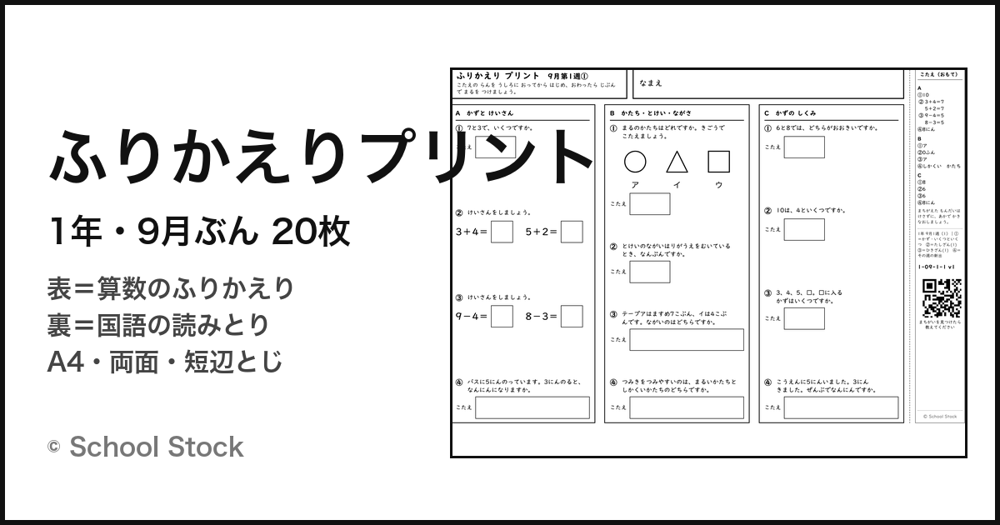
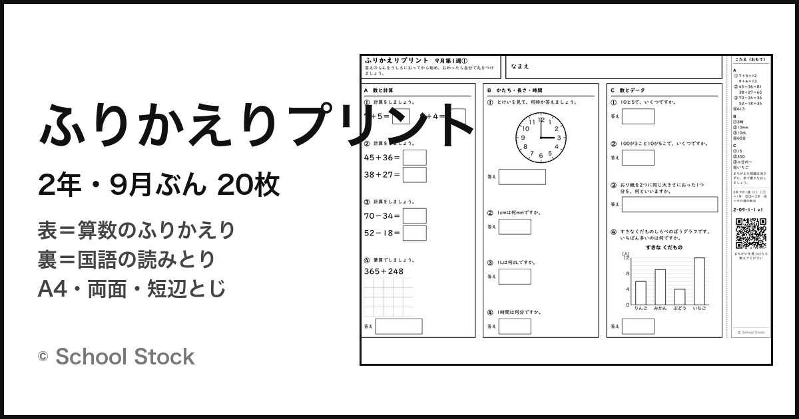
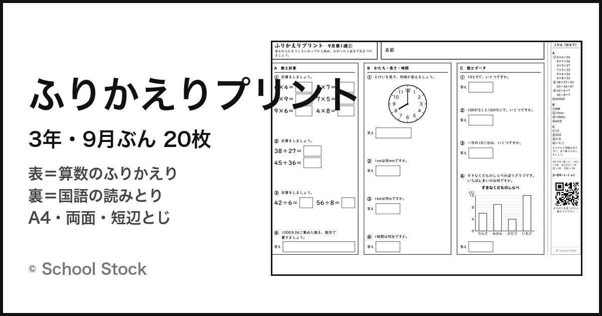
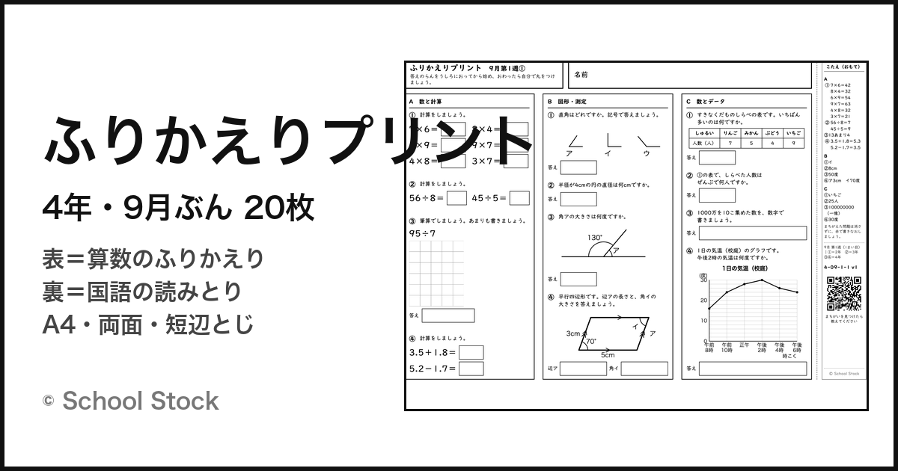
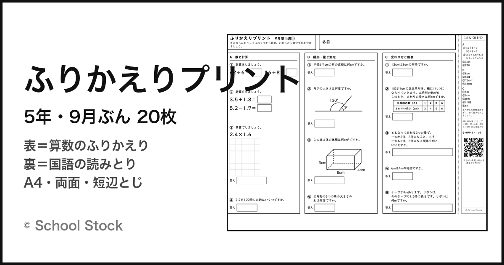
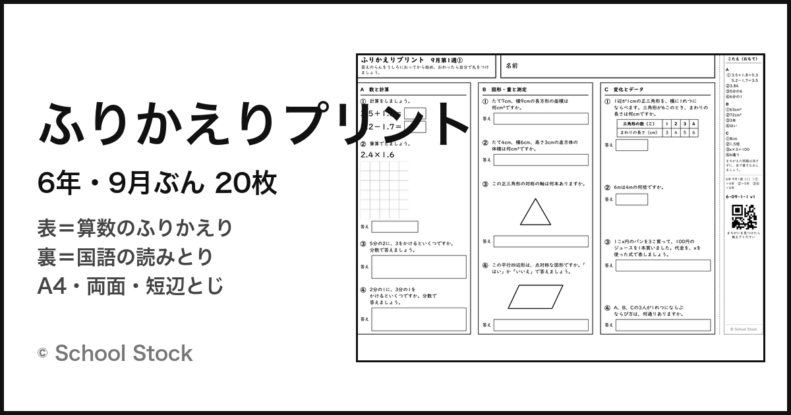

表は算数のふりかえり、裏は国語の読みとり。答えは紙の端の帯に刷ってあり、うしろに折ってかくして解き、終わったら開いて自分で丸をつけます。宿題にも、家庭学習にも、朝の学習にも。ぜんぶ無料です。






夏休み明けの教室には、前の学年の内容があやしくなっている子がいます。その子に今の学年の問題だけを出しても、手が止まります。かといって全員にやさしい問題を配れば、できる子は3分で終わってしまいます。だから1枚の中に前の学年からの階段を作り、どの番号でつまずいたかで「どこまでもどればよいか」が分かるようにしました。
紙面に「これは2年の問題」とは書いていませんできない子の烙印にしないためです。番号と学年の対応は、答えの帯のいちばん下に、先生向けの1行として小さく入れてあります。
評価は〇の数でなく、直した数答えが先に見えてしまう心配には、かくす工夫でなく設計で応えています。答えの数字だけでは埋まらない欄（筆算・たしかめの式・記述）を必ず置き、記録欄は「なおした番号」。記述問題には〈〇のつけ方〉を添えてあるので、記述も子どもが自分で丸をつけられます。
A4・両面・「短辺とじ」で印刷します。短辺とじにすると、表の右端と裏の左端の「答えの帯」が同じ位置に重なって、1枚のひらひらになります。
最初の1回だけ、刷った紙を光にかざして、表と裏の帯が重なっているか確かめてください。ずれていたら印刷設定が「長辺とじ」になっています。
教室で答えを配りたくない場合は「こたえなし版」をどうぞ（答えの帯の中身だけを消したものです）。
6年の分数の問題を、文から式の形に直しました。「3分の2に、5分の1をかけるといくつですか」と文で書いていたので、紙の上で3行になり、上にならぶ計算の問題と別のものに見えていました。分数を分数の形で組んで、1行の式にしています。20枚とも直しました。
2年のグラフを、ぼうグラフから●グラフに変えました。目もりのついたぼうグラフは3年でならう形で、2年生には目もりと目もりの間の数が読めません。1つ分を●1こにして、数も10までにしました。こちらも20枚とも直しています。
3年の1枚（3-09-1-2）は、裏の問3の書きぬきを八字から十二字にしました。八字だと答えが「耳かき一ぱいより」で終わってしまい、答えとして読めませんでした。
2026年9月1日 120枚すべてを v4 にしましたわり算の筆算のマス目が足りていませんでした。736÷4 は8行いるのに、6行しか刷っていません。実際に紙へ書いてみて分かったことです。マスの数を式から計算するようにして、方眼も5mmにそろえました。1年から3年は2マスで1けたです。
裏面のプリント番号が、題名の長い回に切れていたのも直しました。まちがいを教えていただくときの手がかりがこの番号なので、120枚すべてで最後まで出るようにしています。
2026年8月21日 120枚すべてを v3 にしました裏の問1（言葉の意味）で、聞いている言葉が正しい選択肢の中に入っているものが7問ありました。使ってくださった先生から教えていただいたもので、同じ形がほかにないかを全部数え直して直しています。
あわせて、4つの選択肢の正しい答えの位置がかたよっていたので並べかえました。前は問1がア、問2がイに寄っていて、本文を読まなくても当たってしまう状態でした。文章と問題そのものは変えていません。
プリントの端に「3-09-2-1 v5」の形で番号が刷ってあります。数が小さいものを刷ってお使いの場合は、こちらに入れかえてください。
まちがいを見つけたら、プリントの表のQRから教えてください。
1枚＝表裏2ページのPDFです。「まとめてダウンロード」は20枚（40ページ）を1本にしたもの。
階段のつくり ①かず ②たしざん ③ひきざん ④その週のならったところ
くり上がりのある たしざんは2学期後半の内容なので入れていません。1学期にならった範囲だけで作っています。
| 週 | 1枚ずつ（こたえつき） | こたえなし版 |
|---|---|---|
| 第1週 | 1枚目 2枚目 3枚目 4枚目 5枚目 | 1 2 3 4 5 |
| 第2週 | 1枚目 2枚目 3枚目 4枚目 5枚目 | 1 2 3 4 5 |
| 第3週 | 1枚目 2枚目 3枚目 4枚目 5枚目 | 1 2 3 4 5 |
| 第4週 | 1枚目 2枚目 3枚目 4枚目 5枚目 | 1 2 3 4 5 |
階段のつくり ①1年 ②③2年の1学期 ④その週のならったところ
九九は第3週から（5のだん・2のだん→3のだん・4のだん）。ならった段だけを出します。
| 週 | 1枚ずつ（こたえつき） | こたえなし版 |
|---|---|---|
| 第1週 | 1枚目 2枚目 3枚目 4枚目 5枚目 | 1 2 3 4 5 |
| 第2週 | 1枚目 2枚目 3枚目 4枚目 5枚目 | 1 2 3 4 5 |
| 第3週 | 1枚目 2枚目 3枚目 4枚目 5枚目 | 1 2 3 4 5 |
| 第4週 | 1枚目 2枚目 3枚目 4枚目 5枚目 | 1 2 3 4 5 |
階段のつくり A①九九（2年） B①C①1年 ②2年 ③④3年
グラフはぼうグラフまで（折れ線グラフは4年で習うので出しません）。
| 週 | 1枚ずつ（こたえつき） | こたえなし版 |
|---|---|---|
| 第1週 | 1枚目 2枚目 3枚目 4枚目 5枚目 | 1 2 3 4 5 |
| 第2週 | 1枚目 2枚目 3枚目 4枚目 5枚目 | 1 2 3 4 5 |
| 第3週 | 1枚目 2枚目 3枚目 4枚目 5枚目 | 1 2 3 4 5 |
| 第4週 | 1枚目 2枚目 3枚目 4枚目 5枚目 | 1 2 3 4 5 |
階段のつくり ①2年 ②3年 ③④4年
九九は毎枚6問（毎回ちがう組み合わせ）。夏休み明けはここから、と考えています。
| 週 | 1枚ずつ（こたえつき） | こたえなし版 |
|---|---|---|
| 第1週 | 1枚目 2枚目 3枚目 4枚目 5枚目 | 1 2 3 4 5 |
| 第2週 | 1枚目 2枚目 3枚目 4枚目 5枚目 | 1 2 3 4 5 |
| 第3週 | 1枚目 2枚目 3枚目 4枚目 5枚目 | 1 2 3 4 5 |
| 第4週 | 1枚目 2枚目 3枚目 4枚目 5枚目 | 1 2 3 4 5 |
階段のつくり ①3年 ②4年 ③④⑤5年
C列はまるごと「割合の階段」（何倍でしょう→変わり方→比例→小数倍→文章題）。5年は九九を入れないかわりに、割合を1問多くしています。
| 週 | 1枚ずつ（こたえつき） | こたえなし版 |
|---|---|---|
| 第1週 | 1枚目 2枚目 3枚目 4枚目 5枚目 | 1 2 3 4 5 |
| 第2週 | 1枚目 2枚目 3枚目 4枚目 5枚目 | 1 2 3 4 5 |
| 第3週 | 1枚目 2枚目 3枚目 4枚目 5枚目 | 1 2 3 4 5 |
| 第4週 | 1枚目 2枚目 3枚目 4枚目 5枚目 | 1 2 3 4 5 |
階段のつくり ①4年 ②5年 ③④6年
④は分数・立体の体積・データの整理・代表値をめぐります。